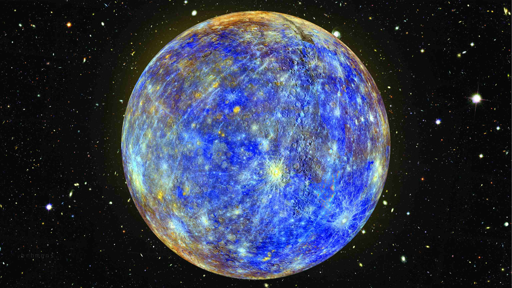
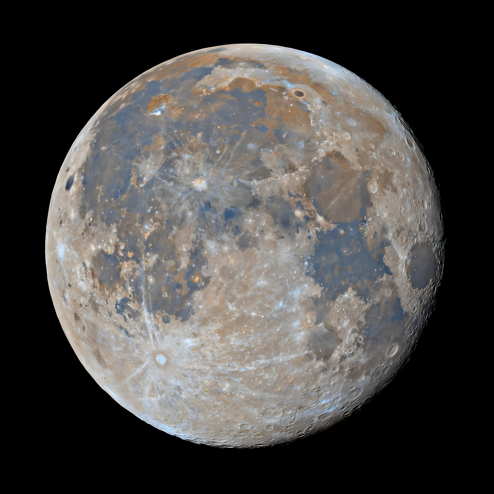
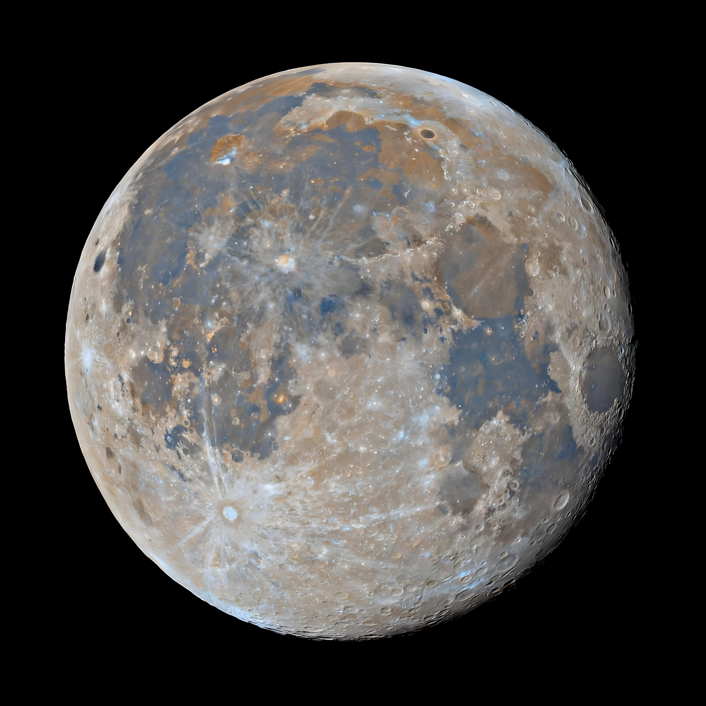
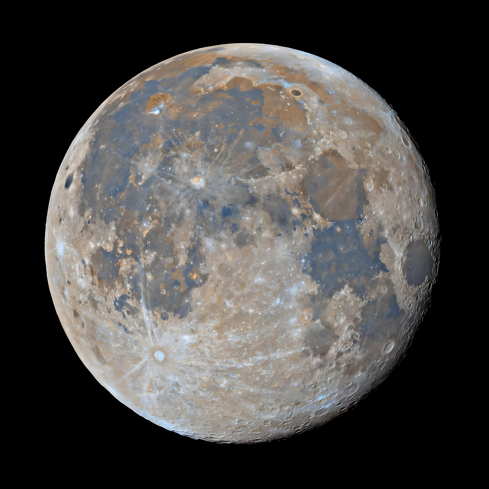
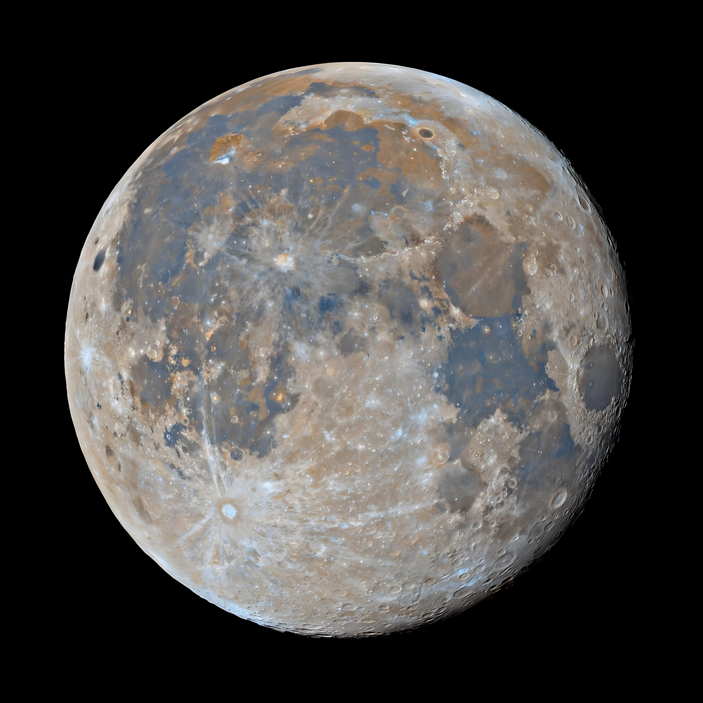
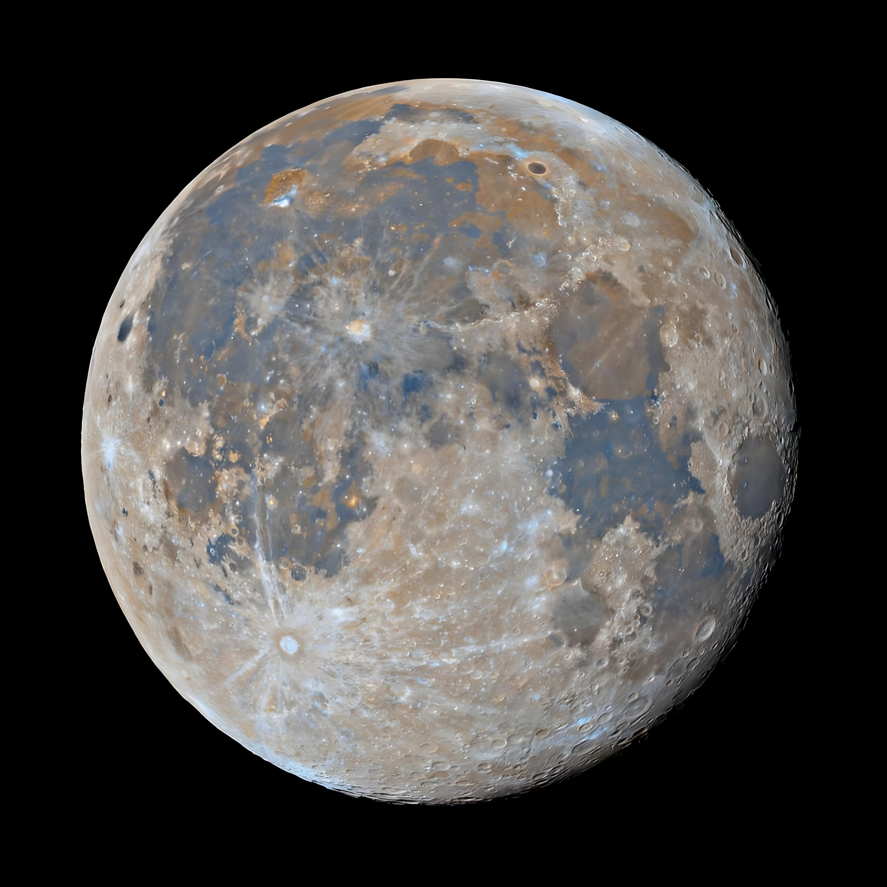

水星是太阳系中离太阳最近的行星。
此刻你正自由地遨游在太空......（返回上一个页面）请闭上眼睛，听水星记，感受水星的孤独.
水星几乎没有大气层，昼夜温差极大，白天能达到427摄氏度，晚上可降至 -173摄氏度。人类曾发射探测器对它进行探测，这些探测让我们对水星的了解逐渐增加。
都说水星是最孤独的行星，你知道为什么吗？ （科普）
 （返回上一个页面）请闭上眼睛，听水星记，感受水星的孤独.（返回上一个页面）请闭上眼睛，听水星记，感受水星的孤独.
（返回上一个页面）请闭上眼睛，听水星记，感受水星的孤独.（返回上一个页面）请闭上眼睛，听水星记，感受水星的孤独.